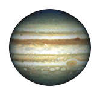
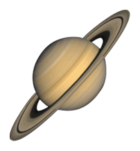

एस्ट्रोमर: ग्रह यात्रा: गतिविधि नियम
- आपको एक-एक करके दस संकेत दिए जाएंगे।
- प्रत्येक संकेत को पढ़ें और पहचानें कि वह किस ग्रह का वर्णन कर रहा है।
- सही ग्रह पर क्लिक करें और अपना उत्तर जाँचने के लिए जमा करें बटन पर क्लिक करें।
- यदि आप सही उत्तर देते हैं, तो आप एक तत्व या परिसर इकट्ठा करते हैं।
- आप जितनी चीजें इकट्ठा करेंगे, आपके जीतने की सम्भावना भी उतनी ही बढ़ेगी|
संकेत:5
भले ही यह सबसे छोटा ग्रह है, पर इसका घनत्व सबसे ज्यादा है| सोडियम (Na) इकट्ठा करने के लिए इस ग्रह पर जाइए|
सही ग्रह पर क्लिक करके जमा करें बटन पर क्लिक करें|






गलत जवाब|
गलत जवाब|